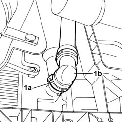
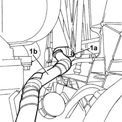
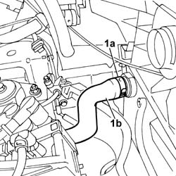
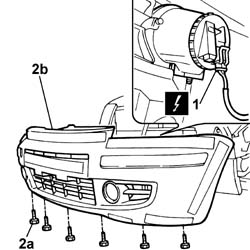
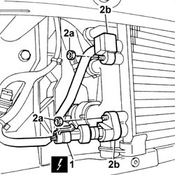
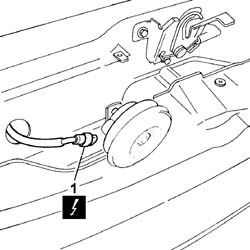
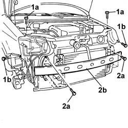

7210A02 FRONT END ASSEMBLY RR
- Path
- Procedures > 72 PANELS AND FRAME > 7210 REMOVING REFITTING > 7210A STRUCTURAL ELEMENTS (FRONT PART) > 7210A02 FRONT END ASSEMBLY RR
- Kind
- repair procedure (removal / refitting; the operation number is the code)
- Applies to
- all engines; all production periods
- Interactive page
- https://sloeber94.github.io/elrnDB-fPnd/en/#/169001929
Applies to: all engines; all production periods
 Removing
Removing
 Refitting
RefittingPosition the vehicle on a lift.
Disconnect the negative battery terminal.
Op. 1048A21 FILTER INPUT SLEEVE - R R
Op. 7055B90 LEFT FRONT WHEEL ARCH LINER - R.R.
Op. 7055B91 RIGHT FRONT WHEEL ARCH LINER - R.R.
Op. 7055A42 FRONT GRILLE - R+R
Op. 5540B14 FRONT HEADLAMP UNIT (ONE) LH OR RH - R R
[Both]
Op. 0010T84 COOLANT FOR AIR CONDITIONING SYSTEM DEHYDRATE AND RECHARGE
Position a suitable container for collecting the coolant.
1. Working on the fastening band (1a) disconnect the lower radiator hose (1b) and drain the system.

Applies to: all engines; all production periods
1. Working on the fastening band (1a) disconnect the pipe from the coolant reservoir (1b).

Applies to: all engines; all production periods
1. Open the fastening band (1a) and disconnect the upper radiator hose (1b).

Applies to: all engines; all production periods
1. Disconnect the electrical connector for the fan.
Description | Connector | |
|---|---|---|
1 | Engine fan motor | N011 |
2. Open the fastening clip (2a) and move the fan wiring (2b) aside.

Applies to: all engines; all production periods
1. Disconnect the electrical connection for the linear sensor.
Description | Connector | |
|---|---|---|
1 | Linear sensor (for climate control) | K120 |
2. Undo the fixing nuts (2a) and disconnect the rigid pipes (2b) for the air conditioning from the condenser.

Applies to: all engines; all production periods
1. Disconnect the electrical connection for the horn.
Description | Connector | |
|---|---|---|
1 | Low tone horn | P011 |
Release the wiring from the fastening clips and move it away from the work area.

Applies to: all engines; all production periods
Op. 7025A34 BONNET LID LOCK (ONE) - R+R OR REPAIR
1. Undo the bolts (1a) fixing the upper crossmember to the wings, then undo the fixing bolts (1b) in the front light cluster housing.
2. Undo the bolts (2a) fixing the reinforcement crossmember to the bodyshell struts, then remove the crossmember/radiator/fan assembly (2b) from the vehicle.

Applies to: all engines; all production periods
Refitting
RemovingPosition the crossmember in the vehicle, then tighten the upper and lower fixing bolts to the recommended torque.
Value - daNm | Fastening | Component | Ø | |
|---|---|---|---|---|
- | 2.4 | Bolt | Upper | M8 |
Value - daNm | Fastening | Component | Ø | |
|---|---|---|---|---|
- | 4 | Bolt | Lower | M10 |
Op. 7025A34 BONNET LID LOCK (ONE) - R+R OR REPAIR
Fasten the electrical wiring to the retaining clips.
Connect the electrical connection for the horn.
Description | Connector | |
|---|---|---|
- | Low tone horn | P011 |
Fit the rigid pipes in place on the condenser and tighten the fixing nuts.
Connect the electrical connection for the linear sensor.
Description | Connector | |
|---|---|---|
- | Linear sensor (for climate control) | K120 |
Position the fan wiring on the fan assembly, then close the retaining clip.
Connect the electrical connection for the fan.
Description | Connector | |
|---|---|---|
- | Engine fan motor | N011 |
Connect the upper radiator hose then close the retaining band.
Connect the coolant reservoir pipe, then close the retaining band.
Connect the lower radiator hose then close the retaining band.
Op. 0010T84 COOLANT FOR AIR CONDITIONING SYSTEM DEHYDRATE AND RECHARGE
Op. 5540B14 FRONT HEADLAMP UNIT (ONE) LH OR RH - R R
[Both]
Op. 7055A42 FRONT GRILLE - R+R
Op. 7055B91 RIGHT FRONT WHEEL ARCH LINER - R.R.
Op. 7055B90 LEFT FRONT WHEEL ARCH LINER - R.R.
Op. 1048A21 FILTER INPUT SLEEVE - R R
Connect the negative battery terminal.
Remove the vehicle from the lift.
Topics linked from this page (8)
- 0010T84 coolant for air conditioning system dehydrate and recharge
- 1048A21 filter input sleeve - r r
- 5540B14 front headlamp unit (one) lh or rh - r r
- 7025A34 bonnet lid lock (one) - r+r or repair
- 7055A42 FRONT GRILLE - R+R
- 7055B90 Left front WHEEL ARCH LINER - R.R.
- 7055B91 Right front WHEEL ARCH LINER - R.R.
- 7210E10 R.R. FRONT BUMPER